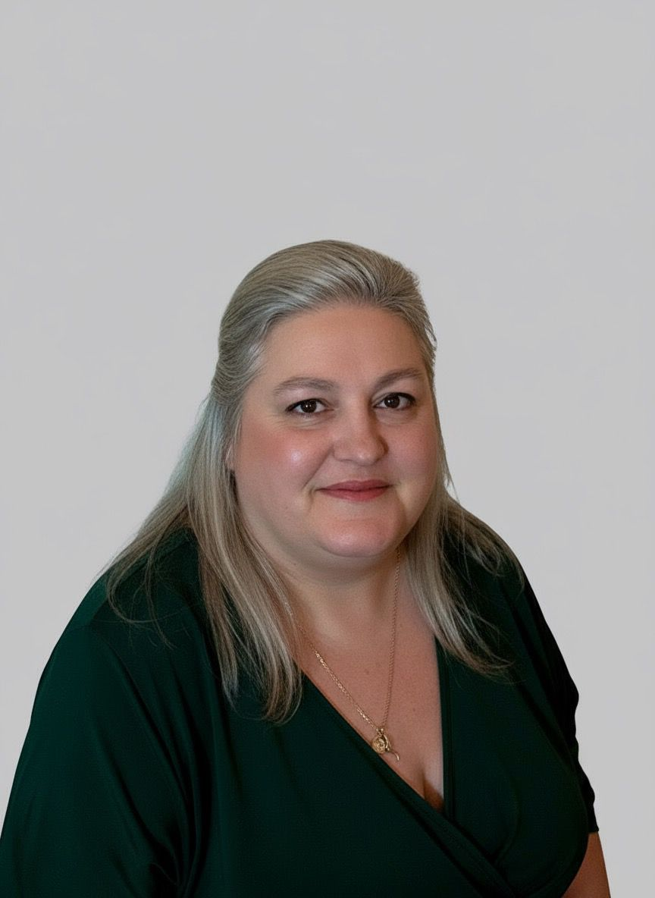

Desarrollo y publico sitios web completos con HTML/CSS, JavaScript, React, Java y Spring, y me especializo en seguridad de la información a través de la beca Coursera "Skills for Work". Trabajo con precisión, documento lo que hago y aprendo rápido. También ofrezco asistencia virtual multilingüe y corrección de textos.

Desarrollo web y ciberseguridad como foco principal; asistencia virtual y corrección de textos como servicios complementarios.
FullStack: HTML/CSS, JavaScript, React, Java, Spring, Git. Diseño y publicación de sitios completos, de la idea al despliegue.
Gestión de agenda, correo, viajes y atención a clientes en español, inglés, italiano y portugués. Manejo de Google Workspace, Notion y ClickUp.
Corrección de estilo en español y traducción/adaptación desde italiano y portugués. Textos de marketing, manuales y contenido web.
Formación y experiencia profesional, en orden cronológico.
Edición de materiales de estudio y, después, administración de cuentas y pagos de más de 60 becarios, con control de exactitud e integridad de la información.
Git, HTML/CSS, JavaScript, React, Java, MySQL, Spring. Modalidad internacional online, con mucho trabajo en equipo remoto.
Introducción a Python (Codo a Codo) e Inteligencia Artificial generativa aplicada al trabajo (Egg Cooperación).
Documentación técnica y control de calidad (QA) sobre sistemas y pantallas.
Sitios web para clientes propios y track de Ciberseguridad en curso vía la beca Coursera "Skills for Work".
Sitios que diseñé y publiqué de punta a punta para clientes propios.
Sitio para una terapeuta y creadora de oráculos: presentación, catálogo con pedidos por WhatsApp y sistema de agenda para sesiones, con una sección por cada terapia.
Sitio para un médium y tarotista: presentación, links de contacto y tienda de piedras, con una estética de cielo nocturno hecha a medida. Actualmente en desarrollo.
En proceso de especialización, sumando esto a mi base de desarrollo FullStack.
Disponible para trabajo remoto o híbrido en Montevideo. Respondo rápido.